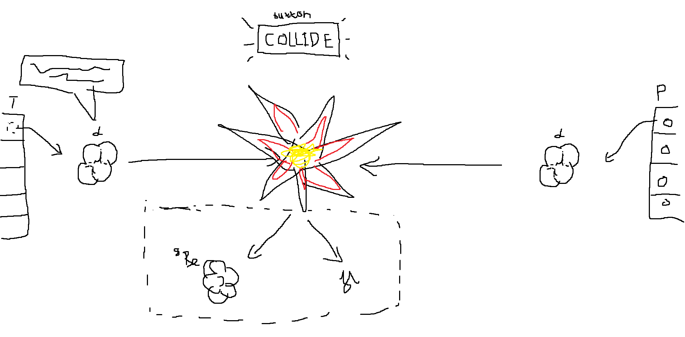

My progression on this project
I started this on 12 October 2024 because I wanted a very primitive, interactive sandbox for a few particle collisions. I first aimed at high-energy events, but making sense of the data was harder than I expected, so I began with familiar examples instead.
I finished the first version on 29 October 2024, and I was proud that I saw it through. Coming back to it now in 2026, I want to make the physics as careful as the code. Choose two particles, see a possible interaction, and learn alongside me :). this still isn’t a full event simulation, but it’s a start. If you are curious about my first visualization of this project, you can hover your mouse here 
The collision lab
Pick one particle in each column.
Then collide them.
BEAM A 01
BEAM B 02
Illustrative motion · not to scale · outcomes are possible channels, not guaranteed events
Energy convention: the display shows pair kinetic energy in the center-of-momentum frame, KCM = √s − (m1 + m2)c². The high-tier amount varies by pair so the example channel is energetically allowed. Rest energy is additional and can be released in annihilation. These are possible channels, not predictions: real probabilities also depend on momentum, spin and impact parameter.
A note from me:
My story
I’m from Leskovac and study at the Faculty of Electronic Engineering in Niš. I swam competitively for about eight years, including national and international meets. Now I’m usually playing chess, reading, or making projects with HTML, CSS, JavaScript, REACT, C#, C, C++ or Java.
I’ve been curious about physics since i was little, watching quantum mechanics videos online and understanding almost none of them. My family, girlfriend and friends keep me going, and Zucka, my dog, is still my undisputed number-one fan.
Back to the top ↑